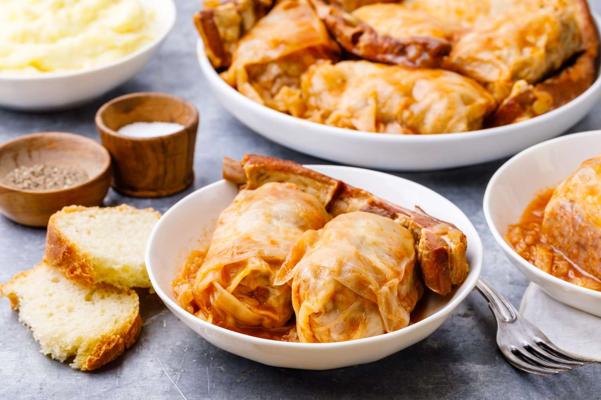

Sarma Recipe

Some nicely served sarmas
An absolute favorite of all generations which happily gathers us around the table during cold, winter months. These
sauerkraut cabbage rolls, which successfully combine sweet, spicy, savory, and sour flavors, are like a family hug,
real comfort food in the Balkans way.
Ingredients
For cabbage rolls
- 1 whole sour cabbage head (cca 1,8 kg)
- 850 g ground meat (beef + pork)
- 1 yellow onion
- 3 cloves garlic
- 1 egg
- 60 g white rice
- 35 g bread crumbs
- 12 g salt
- 1/3 teaspoon ground black pepper
- 2 teaspoon sweet paprika powder
- 1/2 teaspoon hot paprika powder
- lard
- smaller piece of smoked meat (smoked dry pork ribs, smoked bacon etc.)
For the roux
- 1,5 tablespoon lard
- 1,5-2 tablespoon all-purpose flour
- 1/2 teaspoon sweet paprika powder
- 1/2 teaspoon hot paprika powder (you can put less or more, depending on how spicy it is)
- salt (quantity of salt depends on how salty are the cabbage and dried meat)
Steps
- Carefully separate the fermented cabbage leave. Depending on how small or big cabbage rolls you want to make,
you will need about 15-20 cabbage leaves + some extra shredded leaves for covering the bottom of the cooking pot.
If the cabbage is very sour and/or salty, wash the leaves briefly under cold water. After that, if you notice that
cabbage leaves have pronounced hardy veins, remove them with a sharp knife. Repeat this step with all the leaves.
- Prepare a bigger cooking pot by coating the bottom with a thin layer of lard. Chopp roughly the leftover and torn
cabbage leaves that won't be used for making the rolls and spread them on the bottom of the cooking pot. This step
will prevent the sarma from burning during the cooking.
- Mince the onion and garlic and add to a bowl with ground meat, rice, eggs, bread crumbs, salt, black pepper, and
sweet and hot paprika powder. Mix everything well using your hand. Take a piece of the meat stuffing, place it on
the bottom part of the cabbage leaf and wrap it tightly in a roll. Repeat this with the rest of the stuffing and
cabbage leaves.
- When you finish rolling up all of your sarma rolls, layer them tightly next to each other seam-side down in the
cooking pot. Add a piece of dried meat (if using) take 2-3 additional cabbage leaves and cover the rolls. Put some
load on it, like a smaller lid or an old ceramic plate, which will prevent the sarma rolls unroll during the cooking.
Pour over the water so that the sarma is completely covered with it and bring it to a boil.
- Reduce the heat and let it cook for at least 2-2.5 hours, adding more water if necessary.
- When sarma is cooked, make your roux. In a small saucepan add lard and let it melt. Stir the flour with a whisk or
wooden spoon for a few minutes over low heat. When the roux gets a light golden color, turn off the heat and stir in
sweet and hot paprika powder. If necessary, you can add some salt too. Add the roux to the sarma and let it simmer for
about 10 minutes. Serve with homemade bread or mashed potatoes.